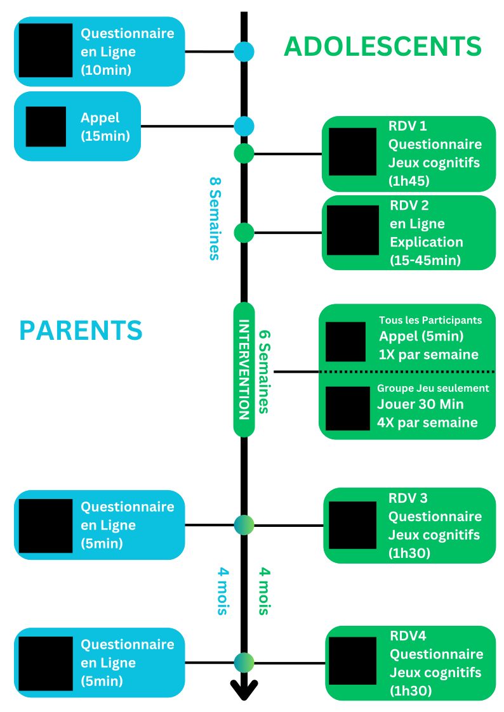

Participez à l’étude Well-Play Teen Genève🔗
Bonjour et bienvenue !
Participer !
Pour participer à cette étude, les parents doivent d’abord donner leur consentement et répondre à quelques questionnaires (environ 10 minutes) en cliquant ici.
Ou laissez-nous vos coordonnées pour que nous vous contactions en cliquant ici.
🧠 Nous invitons des adolescent·e·s âgé·e·s de 11 à 15 ans qui se sentent parfois stressé·e·s ou inquiet·e·s à participer à une étude scientifique innovante sur les jeux numériques, l'apprentissage et le bien-être.
🔬 Quoi : Des chercheur·euse·s de l’Université de Genève (Prof. Daphné Bavelier) et de la Haute École de Santé Genève (Prof. Swann Pichon) invitent des adolescent·e·s âgé·e·s de 11 à 15 ans (inclus) qui se sentent parfois stressé·e·s ou inquiet·e·s, à participer à une étude scientifique financée par le Fonds National Suisse (FNS). L’étude examine comment le fait de jouer modérément et de s’entraîner pendant plusieurs semaines avec un jeu que nous fournissons adapté à l’âge des participant·e·s, pourrait influencer l’apprentissage et les émotions.
🎁 Ce que le/la participant-e gagne : pour chaque participant, nous ferons un don de 40 fr en son nom à une fondation de son choix parmi Pro Natura Genève, l”Association pour la Sauvegarde du Léman, WWF et One Tree Planted. Les participant-es recevront en plus des bons cadeau Galaxus (jusqu’à 60 fr).
🎲 Si vous êtes éligible : Vous serez invité·e·s à participer et inclus·es dans l’une des trois conditions de l’étude: soit deux conditions « jeu » qui nécessitent de jouer depuis chez soit 2 heures par semaine, par séances de 20 à 30 minutes, pendant 6 semaines à un jeu de type puzzle ou à un jeu sur le thème de l’écologie, soit une condition qui poursuit ses activités habituelles. Par ailleurs, trois rendez-vous ont lieu à l’Université de Genève (Uni Mail ou Campus Biotech) pour remplir des questionnaires et réaliser des tâches cognitives.
Déroulement
Quel est l’objectif de l’étude Well-Play ?
L’objectif de l’étude est de comprendre en quoi jouer à un jeu vidéo adapté pour les adolescents sur plusieurs semaines peut influencer leur santé, leur bien-être et leurs apprentissages.
Que fait mon enfant pendant l’étude ?
L’étude comporte quatre étapes :
Étape 1 : Un premier rendez-vous (1h45) au laboratoire à l’Université où l’adolescent donne son consentement pour participer à l’étude. Puis, l’adolescent répond à des questionnaires et fait des jeux cognitifs sur un ordinateur.
Étape 2 : Un rendez-vous en ligne (15-45min) avec l’adolescent pour expliquer comment vont se passer les 6 prochaines semaines et aider à installer le jeu si besoin.
Pendant 6 semaines, l’adolescent joue au jeu vidéo ou continue ses activités habituelles. On le contactera chaque semaine (5 minutes) pour répondre à quelques questions.
Étape 3 : Un deuxième rendez-vous (1h30) au laboratoire environ 7 semaines après le rendez-vous en ligne pour refaire les questionnaires et les jeux.
Étape 4 : Un troisième rendez-vous (1h30) au laboratoire environ 6 mois après le premier pour des questionnaires et jeux similaires.
Quel âge doit avoir mon enfant pour participer ?
Pour participer à l’étude, votre enfant doit être âgé de 11 à 15 ans. Si votre enfant a 10 ans, vous pouvez tout de même l’inscrire à l’étude et s’il est éligible, nous vous contacterons lorsqu’il aura atteint les 11 ans.
Mon enfant doit-il être joueur ou joueuse de jeu vidéo pour participer à l’étude ?
Non, tous les adolescent-es entre 11 et 15 ans peuvent participer à l’étude, il est important pour nous d’avoir une diversité des participant-es.
Où se trouve le laboratoire de L’université ?
Il vous est possible de choisir le lieu des RDV à l’université entre Campus Biotech ou Unimail. Ce lieu sera convenu avec vous au début de l’étude.
Chemin des Mines 9, Genève
Boulevard du Pont d’Arve 40, Genève
Comment est décidé dans quel groupe sera mon enfant ?
Un logiciel va tirer de façon aléatoire dans quel groupe sera chaque participant :
Groupe jeu 1 : joue durant 6 semaines à un jeu vidéo sur ordinateur, développé par l’équipe de recherche qui a pour but de dépolluer des planètes et replanter des arbres.
Groupe jeu 2 : joue durant 6 semaines à un jeu vidéo sur ordinateur, adapté à l’âge de votre enfant, qui consiste à résoudre des puzzles.
Groupe sans jeu : continue ses activités habituelles durant les 6 semaines d’intervention.
Comment sont organisés les temps de jeu durant l’étude ?
Pour une pratique modérée et régulière, nous recommandons de jouer des sessions de 30 minutes, 4 jours par semaine, pendant 6 semaines, pour arriver à un total de 12 heures de jeu dans le cadre de cette intervention.
Quelles sont les compensations pour la participation à l’étude ?
Votre enfant recevra des bons cadeaux de chez Galaxus en fonction de sa participation :
10 CHF pour le premier rendez-vous à l’université
10 CHF pour avoir participé à l’ensemble des appels hebdomadaires
10 CHF pour le deuxième rendez-vous à l’université
10 CHF pour le troisième rendez-vous à l’université
25 CHF pour les participants qui joue à l’un des jeu vidéo
En plus de cela, votre enfant recevra un bonus pour avoir complété toute l’étude. Après avoir terminé le dernier RDV à l’Université, nous ferons une donation de 40 CHF en son nom à une fondation de son choix (parmi Pro Natura Genève, l”Association pour la Sauvegarde du Léman, WWF et One Tree Planted).
Il y a-t-il des risques associés à l’étude ?
L’étude ne comporte pas de risques pour la santé des participants.
Mon enfant peut-il se retirer de l’étude à tout moment ?
Oui, vous et votre enfant êtes libres d’interrompre la participation à tout moment sans justification. Votre enfant recevra les bons cadeaux Galaxus en fonction des étapes complétées.
Les données de mon enfant seront-elles protégées ?
Oui, la confidentialité des données est garantie. Les informations personnelles de votre enfant ne seront pas communiquées à des personnes extérieures à l’étude.
Puis-je accéder aux résultats de l’étude ?
Oui, vous pouvez demander à recevoir les résultats en contactant les Prof. Swann Pichon et Prof. Daphné Bavelier, responsables de l’étude.

{kind=link}
Merci de votre intérêt pour notre recherche. Si vous souhaitez nous contacter ou si vous avez des questions, n’hésitez pas à nous écrire à l’adresse suivante : wellplay@unige.ch
Ou par le biais du formulaire ci-dessous.